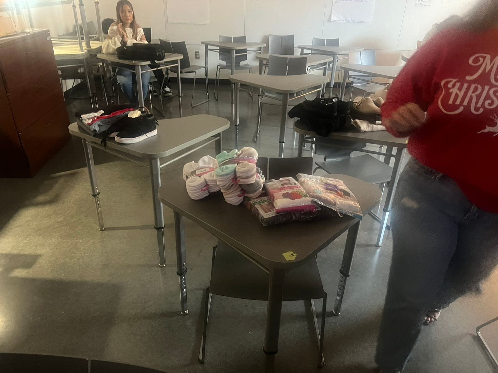
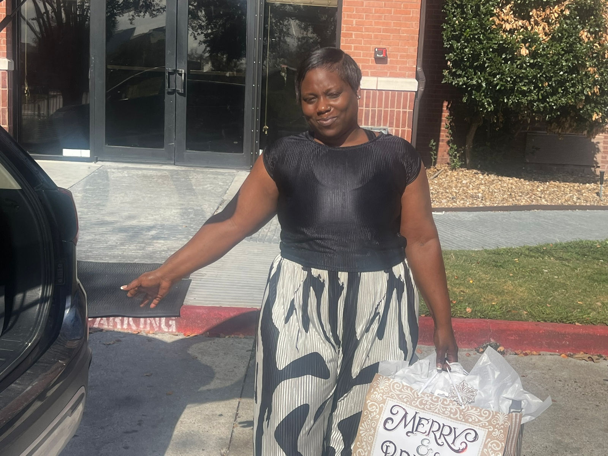
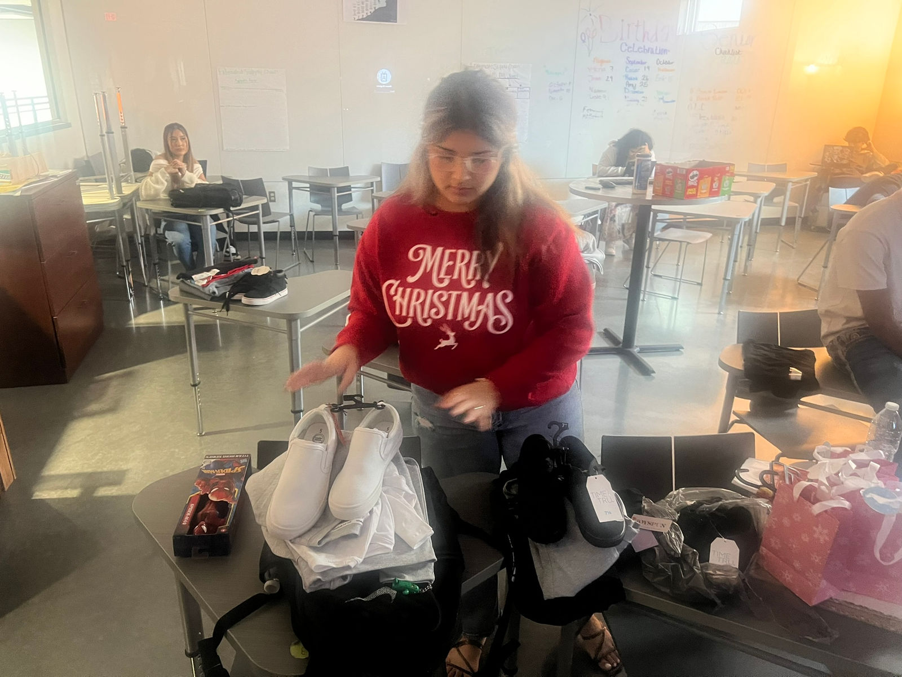

Blanson SkillsUSA Champions the Future Through Santa Donations Project

This holiday season, members of Blanson CTE High School's SkillsUSA chapter put the 2025--2026 theme, "Champion Your Future," into action through their Santa Donations Community Service project. Students organized, funded, purchased, wrapped, and personally delivered gifts to support a local family and ensure a meaningful Christmas celebration.
The project was fully student-led, requiring members to plan responsibly, manage chapter funds, and work collaboratively from start to finish. From clothing and shoes to thoughtfully selected gifts, each item reflected the students' commitment to service, compassion, and leadership.
By choosing to give back, Blanson SkillsUSA members demonstrated that championing the future is not only about career preparation but also about character, citizenship, and community responsibility. The Santa Donations project highlights how students are developing the values and skills needed to positively impact others--today and in the future.
Blanson SkillsUSA members prepare wrapped gifts for delivery as part of their Santa Donations project, championing compassion and community support.
Students deliver holiday gifts to a local family, demonstrating the SkillsUSA theme "Champion Your Future" through service and leadership.
Students collaborate to sort and prepare donated items, reinforcing teamwork and responsibility as future-ready leaders.


Filed under SkillsUSA, Giving Back